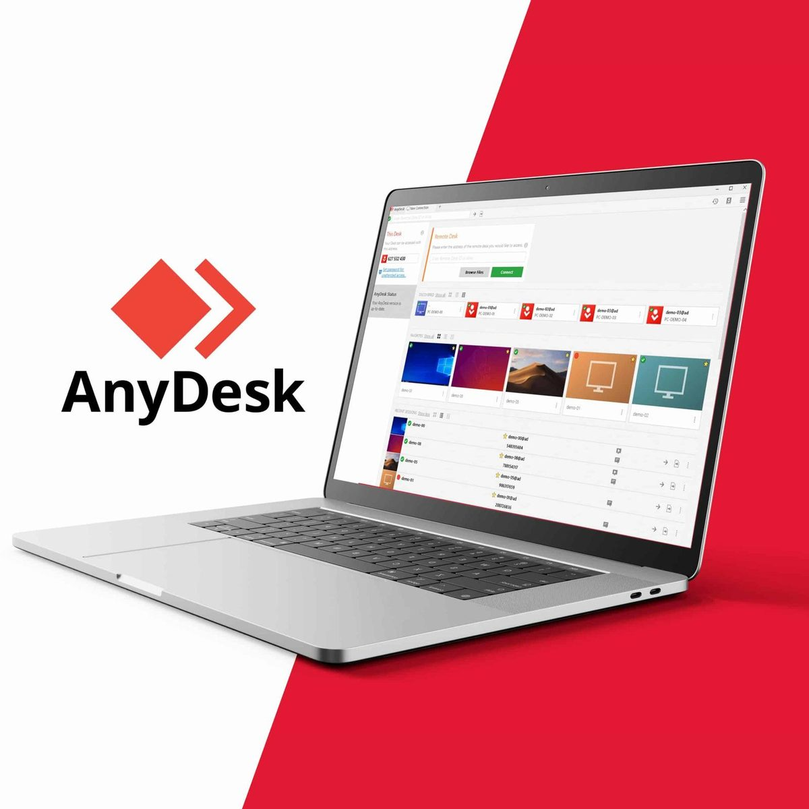

#CONSIGLI👥
⬆️📌 AnyDesk - Un’ottima soluzione Software di desktop Remoto.
A causa della pandemia da Covid-19, molte aziende hanno dovuto stravolgere il loro modo di lavorare. Molte aziende, di diversi settori, hanno avuto la necessità di attuare lo Smart Working, ma spesso impreparate a questo tipo di situazione, non avendo la possibilità di lavorare da casa con tutti i dati e/o programmi necessari, hanno avuto la necessità di lavorare da remoto, come se stessimo sul luogo di lavoro.
Ed è proprio per questo che sono a parlarvi del software AnyDesk e delle sue caratteristiche, uno dei migliori software di desktop remoto in circolazione.
✅ Esso ha una versione gratuita, free, ma anche una versione professionale per le aziende.
✅ È facile da usare, è necessario solo lanciare o scaricare il file eseguibile per poi iniziare.
✅ Funziona su più piattaforme e sistemi operativi: Windows, Linux, Free BSD, Mac OS, iOS e Android.
✅ Garantisce connessioni desktop remote sicure ed affidabili, sia per i professionisti sia per gli altri utenti.
✅ Per trasferire i file tra computer, è possibile semplicemente copiarli ed incollarli oppure usare il tab per il trasferimento.
✅ E se hai bisogno di un accesso automatico al tuo computer, è possibile. Dovrai solo installare e impostare una password sul tuo pc.
✅ Ottime le prestazioni con l’innovativo sistema codec DeskRT che garantisce un basso lag, anche con risoluzioni dello schermo elevate o larghezze di banda di soli 100 kB/s
AnyDesk: facile, comodo e sicuro.
AnyDesk & AnyWhere & AnyTime
Se lo desideri, iscriviti ai mie canali social per restare aggiornato ⬇️
Social MediaInoltre se hai trovato utile ed interessante questo articolo, non esitare a condividerlo, a lasciare un tuo mi piace 👍, o seguire la mia pagina Facebook per sostenermi e continuare ad informare. Grazie anticipatamente a chi vorrà farlo.